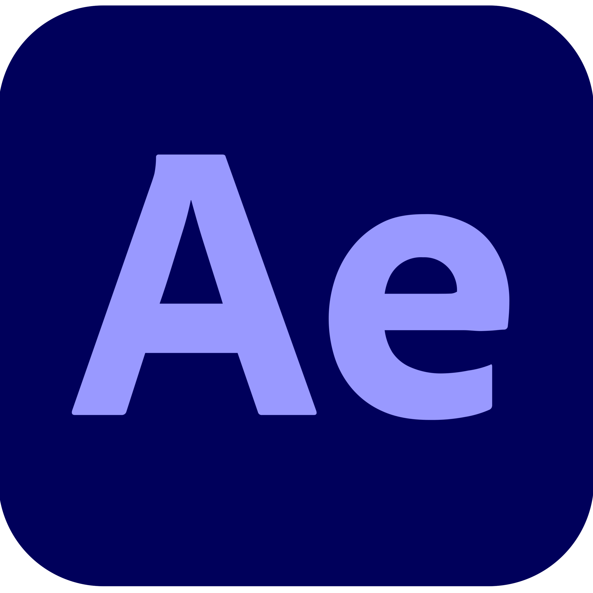

Le projet du CV vidéo consistait à présenter ses compétences, sa personnalité et ses objectifs professionnels à travers une courte vidéo. Même s’il s’agissait d’un projet d’étude, l’objectif était aussi de pouvoir l’utiliser dans une vraie recherche de stage ou d’alternance.
La première étape était celle de l’intention personnelle, une phase très importante qui nous demandait de réfléchir à qui nous sommes, ce que nous aimons faire, nos qualités, et ce que nous voulons transmettre dans cette vidéo.
Ensuite, nous avons travaillé sur un storyboard afin de construire un scénario solide : comment débuter la vidéo, comment attirer l’attention dès les premières secondes, et surtout, comment maintenir un rythme fluide tout au long du montage. Il y avait aussi des types de plans imposés, à respecter dans notre réalisation.
Puis je suis passée au tournage, accompagnée de deux amies extérieures à l’IUT, qui m’ont aidée à filmer. En plus des plans prévus, j’ai intégré des images personnelles filmées avec mon téléphone, afin de montrer davantage ma sensibilité, mes centres d’intérêt et ma créativité. Ces extraits permettent de rendre le CV plus authentique et personnel.
Pour le montage, j’ai choisi DaVinci Resolve, un logiciel que j’avais déjà beaucoup utilisé l’année précédente et avec lequel je suis à l’aise. J’aurais pu utiliser Premiere Pro, mais j’ai préféré rester sur un outil que je maîtrisais. J’ai également utilisé After Effects, notamment pour créer quelques animations simples, afin d’ajouter du dynamisme à certaines scènes.

J’ai adoré réaliser ce projet. Comme j’aime énormément le montage vidéo, ce CV m’a permis de me sentir dans mon élément. J’ai aussi beaucoup apprécié tourner les scènes avec mes amies, c’était un moment créatif et motivant. Ce projet a renforcé mon envie de travailler dans le montage et m’a encore plus donné envie de faire de la vidéo au sens large, y compris comme vidéaste.
Ce qui a été plus difficile, c’est le manque de temps pour filmer, et le fait qu’il fallait parfois improviser certains plans. J’aurais aimé pouvoir me filmer moi-même, mais comme j’étais censée apparaître dans la vidéo, ce n’était pas évident à gérer seule.
Malgré tout, je suis très satisfaite du résultat, et c’est pour cette raison que j’ai choisi de le partager ici, dans mon portfolio.